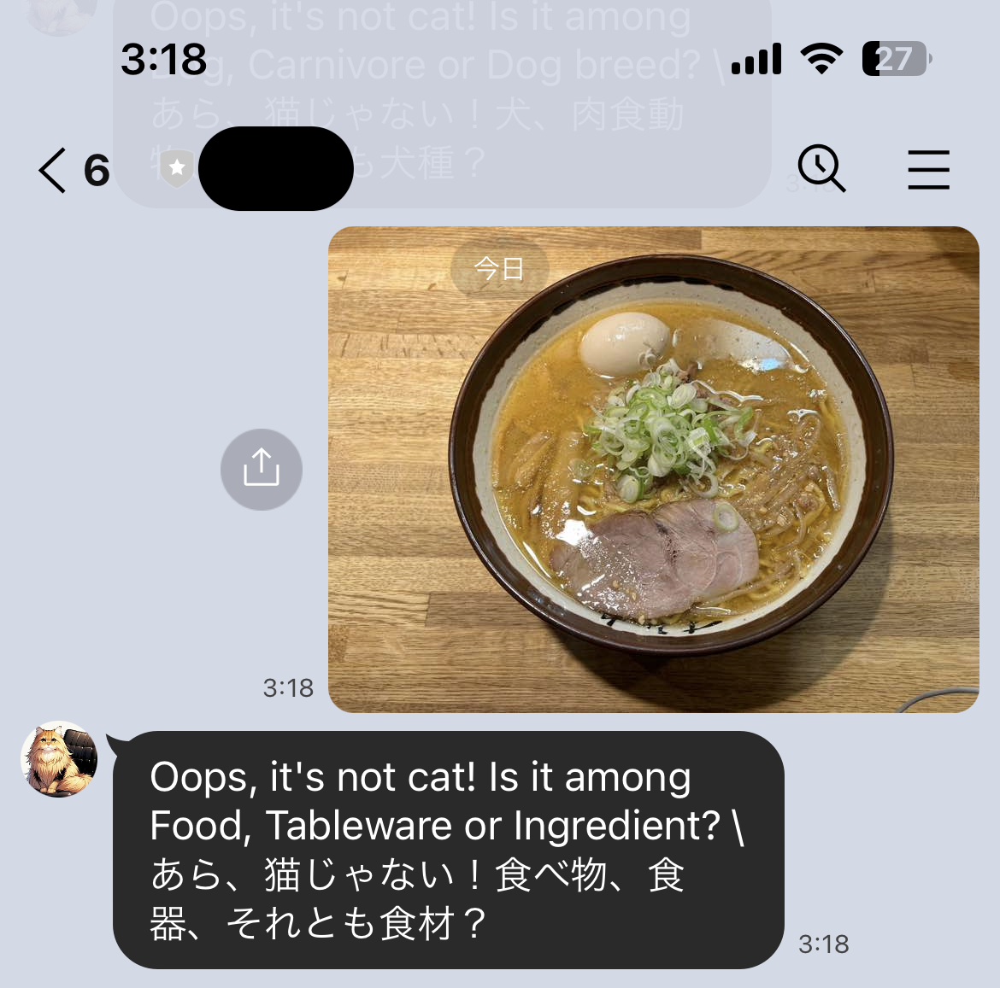

A chatbot for the LINE app, a popular messaging platform in Japan, using Django, which detects whether an image message contains a cat and responds accordingly.
The message changes based on the similarity percentage.
90%~ 'Absolutely!!'
80%~ 'Certainly!'
60%~ 'Probably'
40%~ 'Maybe?'
~39% Possibly...'
Responds with the top three object predictions if the image doesn't contain a cat.

SOURCE
https://github.com/sungwi/linebot_cat
STACK
Python, Django, HTML
LINE Messaging API, Google Cloud Vision API, Deepl API
DURATION
2024.7 - 2024.8
Article
Qiita
* Japanese